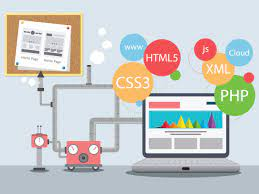
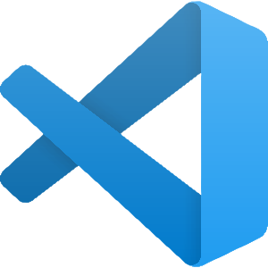

Resumo sobre o tema (Desenvolvimento Web)
O desenvolvimento web é um campo essencial da tecnologia que se concentra na criação, construção e
manutenção de sites e aplicações online. Envolve a combinação de várias disciplinas, como design de
interfaces, programação e gerenciamento de servidores, para produzir experiências digitais
interativas e
funcionais.
O desenvolvimento web pode ser dividido em duas partes principais: o desenvolvimento front-end, que lida com a aparência e interatividade visível para os usuários, e o desenvolvimento back-end, que aborda os processos de armazenamento, processamento de dados e lógica que acontecem nos bastidores. Juntas, essas abordagens formam a base para a construção de uma ampla variedade de sites e aplicações que impulsionam a presença e os serviços das empresas na internet.
O que é desenvolvimento web
Desenvolvimento web é o processo de criar, construir e manter sites, aplicativos e outras soluções online. Envolve a utilização de várias tecnologias, linguagens de programação, ferramentas e metodologias para criar interfaces de usuário atraentes, funcionais e interativas, além de implementar a lógica de negócios e a infraestrutura necessária para que essas aplicações possam operar na internet. O desenvolvimento web é dividido em duas principais áreas: o desenvolvimento front-end e o desenvolvimento back-end. O front-end trata da parte visível do site ou aplicativo, incluindo o design, a apresentação visual e as interações com o usuário. Isso envolve o uso de linguagens como HTML, CSS e JavaScript para construir a interface que os usuários veem e interagem.

O que faz um desenvolvedor web
Um desenvolvedor web é um profissional responsável por criar, construir e manter sites e aplicativos
para a
internet. O trabalho de um desenvolvedor web envolve uma variedade de tarefas técnicas e criativas,
que
podem incluir:
Desenvolvimento Front-End:
Desenvolvimento Back-End:
Banco de Dados:
Segurança e Desempenho:
Manutenção e Atualização:
Colaboração e Comunicação:
No geral, um desenvolvedor web combina habilidades técnicas com criatividade para criar experiências online atraentes e funcionais para os usuários, garantindo que os sites e aplicativos estejam bem projetados, sejam fáceis de usar e ofereçam um bom desempenho.
O que significa front-end e back-end
Front-end e back-end são termos utilizados no desenvolvimento web para se referir às duas principais
áreas de
trabalho envolvidas na criação de sites e aplicativos. Eles se referem às diferentes partes e
funcionalidades de uma aplicação online.
Front-End:
O front-end, também conhecido como "lado do cliente", é a parte da aplicação web com a qual os
usuários
interagem diretamente. Ele engloba tudo o que é visível na interface do usuário e como os elementos
interagem. Isso inclui o design, a disposição visual, a tipografia, as cores, os botões, os
formulários e
qualquer animação ou efeito que os usuários possam ver. A interatividade, como cliques em botões e
preenchimento de formulários, também faz parte do front-end. As tecnologias comuns utilizadas no
front-end
incluem HTML (para estrutura), CSS (para estilos) e JavaScript (para interatividade).
Back-End:
O back-end, também conhecido como "lado do servidor", é a parte da aplicação que lida com
processamento de
dados, lógica de negócios e armazenamento. Ele não é visível para os usuários, mas é essencial para
o
funcionamento da aplicação. O back-end gerencia coisas como autenticação de usuários, acesso a
bancos de
dados, processamento de formulários, manipulação de dados e cálculos complexos.
Linguagens de
programação
como Python, PHP, Ruby, Java e frameworks como Node.js são frequentemente usados para desenvolver a
lógica
do back-end.
Em resumo, enquanto o front-end trata da interface de usuário e da experiência visual, o back-end
lida com
toda a lógica, processamento e armazenamento de dados necessários para tornar a aplicação funcional
e
segura. Um site ou aplicativo eficaz requer uma colaboração eficiente entre desenvolvedores
front-end e
back-end para oferecer uma experiência completa e coesa aos usuários.
O que é desenvolvimento web full stack
Desenvolvimento web full stack refere-se à capacidade de um profissional de desenvolvimento web trabalhar em ambas as áreas principais do desenvolvimento web: front-end e back-end. Em outras palavras, um desenvolvedor full stack é capaz de lidar com todas as etapas do desenvolvimento de um site ou aplicativo, desde a criação da interface do usuário até a implementação da lógica de negócios e o gerenciamento do servidor.
Um desenvolvedor web full stack possui conhecimentos e habilidades em diversas tecnologias, linguagens de programação e frameworks, permitindo-lhes construir soluções completas e funcionais.
O desenvolvimento web full stack permite que um profissional tenha uma visão abrangente do processo de desenvolvimento e seja capaz de criar produtos completos e funcionais, atendendo a todas as necessidades técnicas e de usabilidade.
No entanto, vale ressaltar que, devido à ampla gama de tecnologias envolvidas, ser um desenvolvedor web full stack pode exigir um aprendizado contínuo para se manter atualizado com as tendências e avanços na área.As principais tecnologias de desenvolvimento web (HTML, CSS, JavaScript)
HTML é a linguagem fundamental usada para criar a estrutura e o conteúdo de páginas web. Ele utiliza tags de marcação para definir a estrutura hierárquica de um documento, incluindo cabeçalhos, parágrafos, listas, links e imagens. O HTML é a base sobre a qual os elementos de uma página são organizados, permitindo que os navegadores exibam o conteúdo de forma coesa e organizada.
CSS é uma linguagem usada para estilizar a apresentação e o design de páginas web. Ela permite controlar cores, fontes, tamanhos, margens, posicionamento e outros aspectos visuais das páginas. Ao separar a formatação do conteúdo (definido em HTML), o CSS permite que os desenvolvedores apliquem estilos consistentes e personalizados a várias páginas, garantindo uma aparência coesa em todo o site.
JavaScript é uma linguagem de programação utilizada para adicionar interatividade e funcionalidades dinâmicas às páginas web. Ela permite que os desenvolvedores criem ações como validação de formulários, animações, atualizações de conteúdo em tempo real e manipulação de elementos da página. O JavaScript é executado no navegador do usuário e, portanto, desempenha um papel crucial na criação de experiências interativas na web. Em conjunto, HTML, CSS e JavaScript formam o trio fundamental do desenvolvimento web. O HTML fornece a estrutura, o CSS cuida do design e a formatação, e o JavaScript adiciona interatividade e dinamismo. Essas tecnologias são a base para a criação de sites e aplicativos modernos, permitindo aos desenvolvedores criar experiências envolventes e interativas para os usuários da internet.
Pequeno resumo sobre cada uma das tecnologias acima citadas
Em resumo, HTML define a estrutura do conteúdo, CSS cuida do estilo e da apresentação visual, e JavaScript adiciona interatividade e funcionalidades dinâmicas às páginas da web. Juntos, esses três elementos formam a base para a criação de experiências ricas e envolventes na internet.
Melhores editores de código contendo seus respectivos links para instalação
 Visual Studio Code (VS Code):
Um editor de código gratuito e altamente personalizável desenvolvido pela Microsoft, conhecido por sua grande comunidade de extensões que adicionam recursos e funcionalidades.
Site: https://code.visualstudio.com/
 Sublime Text:
Sublime Text:
Um editor de código rápido e leve com uma interface intuitiva e recursos poderosos, adequado para várias linguagens de programação.
Site: https://www.sublimetext.com/
Atom:
Um editor de código de código aberto desenvolvido pelo GitHub, conhecido por sua extensibilidade e interface amigável.
Site: https://github.blog/2022-06-08-sunsetting-atom/
Notepad++:
Um editor de código fonte gratuito para Windows com suporte a várias linguagens de programação e recursos avançados.
Site: https://notepad-plus-plus.org/
Brackets:
Um editor de código gratuito desenvolvido pela Adobe, especialmente focado em desenvolvimento web com recursos integrados para HTML, CSS e JavaScript.
Site: https://brackets.io/
Vim:
Um editor de código altamente configurável e poderoso, preferido por muitos desenvolvedores experientes que gostam de trabalhar no terminal.
Site: https://www.vim.org/
Lista contendo as principais opções gratuitas para hospedagem de sites estáticos
GitHub Pages:
Oferecido pelo GitHub, o GitHub Pages permite hospedar sites estáticos diretamente de repositórios do GitHub. É fácil de configurar e oferece integração com Git para fácil atualização do conteúdo.
Site: https://pages.github.com/
Netlify:
O Netlify é uma plataforma de hospedagem que facilita a implantação de sites estáticos a partir de repositórios Git. Ele oferece recursos como implantação contínua, redirecionamentos, formulários de contato e muito mais.
Site: https://www.netlify.com/
Vercel:A Vercel é uma plataforma de hospedagem que suporta implantação de sites estáticos e também aplicativos front-end. Ela oferece integração com Git e possui recursos avançados para otimização de desempenho.
Site: https://vercel.com/
GitLab Pages:Semelhante ao GitHub Pages, o GitLab Pages permite hospedar sites estáticos diretamente de repositórios GitLab. É uma opção conveniente para quem já utiliza a plataforma GitLab.
Site: https://docs.gitlab.com/ee/user/project/pages/
Bitbucket Pages:Oferecido pelo Bitbucket, o Bitbucket Pages permite hospedar sites estáticos diretamente de repositórios Bitbucket. É uma alternativa para aqueles que usam o Bitbucket para controle de versão.
Site: https://bitbucket.org/product/features/pipelines
Surge:O Surge é uma opção simples e rápida para hospedagem de sites estáticos. Ele permite que você implante facilmente sites a partir da linha de comando.
Site: https://surge.sh/
Render:A Render é uma plataforma de hospedagem que suporta sites estáticos e aplicativos dinâmicos. Ela oferece planos gratuitos com limites generosos.
Site: https://render.com/
10 - Dicas de como iniciar a carreira de desenvolvimento web
Comece aprendendo as bases do desenvolvimento web, incluindo HTML, CSS e JavaScript. Essas são as tecnologias essenciais para criar sites e aplicações web.
Além das linguagens front-end, escolha uma linguagem de programação para o desenvolvimento back-end, como Python, Ruby, PHP ou JavaScript (Node.js). Isso permitirá que você crie a lógica e a funcionalidade do seu site.
Familiarize-se com frameworks e bibliotecas populares, como React, Angular ou Vue.js para o front-end, e Express.js, Django ou Ruby on Rails para o back-end. Essas ferramentas podem agilizar o desenvolvimento e melhorar a qualidade do código.
Aplique o que aprendeu em projetos pessoais. Criar sites ou aplicativos pequenos por conta própria ajuda a ganhar experiência e a construir um portfólio.
Utilize plataformas como Codecademy, Udemy, Coursera, edX e FreeCodeCamp para cursos e tutoriais detalhados.
A habilidade de ler e entender a documentação é crucial para um desenvolvedor web. Muitas vezes, você precisará aprender a usar novas bibliotecas e tecnologias por meio da documentação.
Junte-se a fóruns, grupos no LinkedIn, Reddit e comunidades em redes sociais voltadas para desenvolvimento web. Isso pode ajudar você a se manter atualizado e a obter ajuda quando necessário.
Compile seus projetos em um portfólio online. Isso pode ser um site simples onde você exibe os projetos que desenvolveu. Um bom portfólio pode impressionar potenciais empregadores ou clientes.
Trabalhar em projetos colaborativos permite que você aprenda a trabalhar em equipe e ganhe insights valiosos com outros desenvolvedores.
Aprenda sobre boas práticas de desenvolvimento, como organização de código, versionamento, segurança e otimização de desempenho.
Estágios, programas de aprendizado ou trabalhos freelance podem oferecer oportunidades práticas para aplicar seus conhecimentos e aprender com profissionais experientes.
O campo do desenvolvimento web está em constante evolução. Esteja disposto a aprender e a se adaptar a novas tecnologias e tendências.